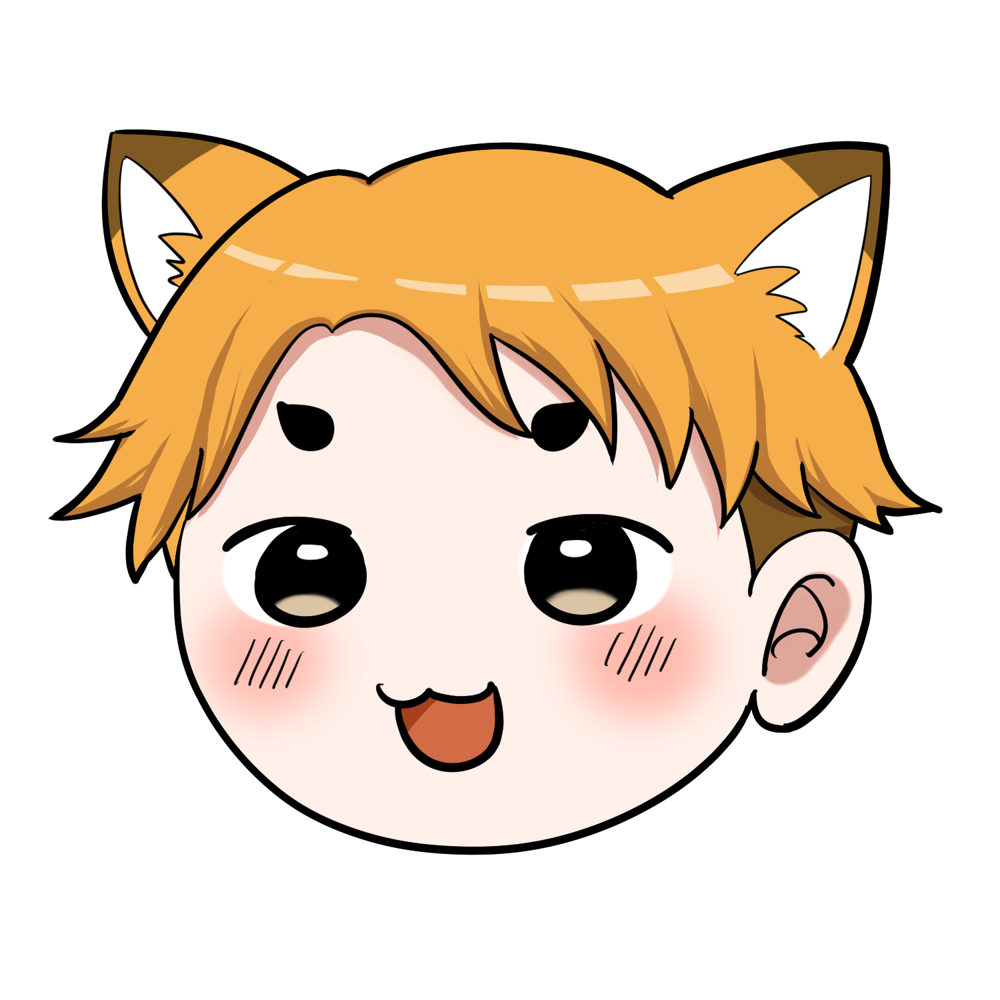
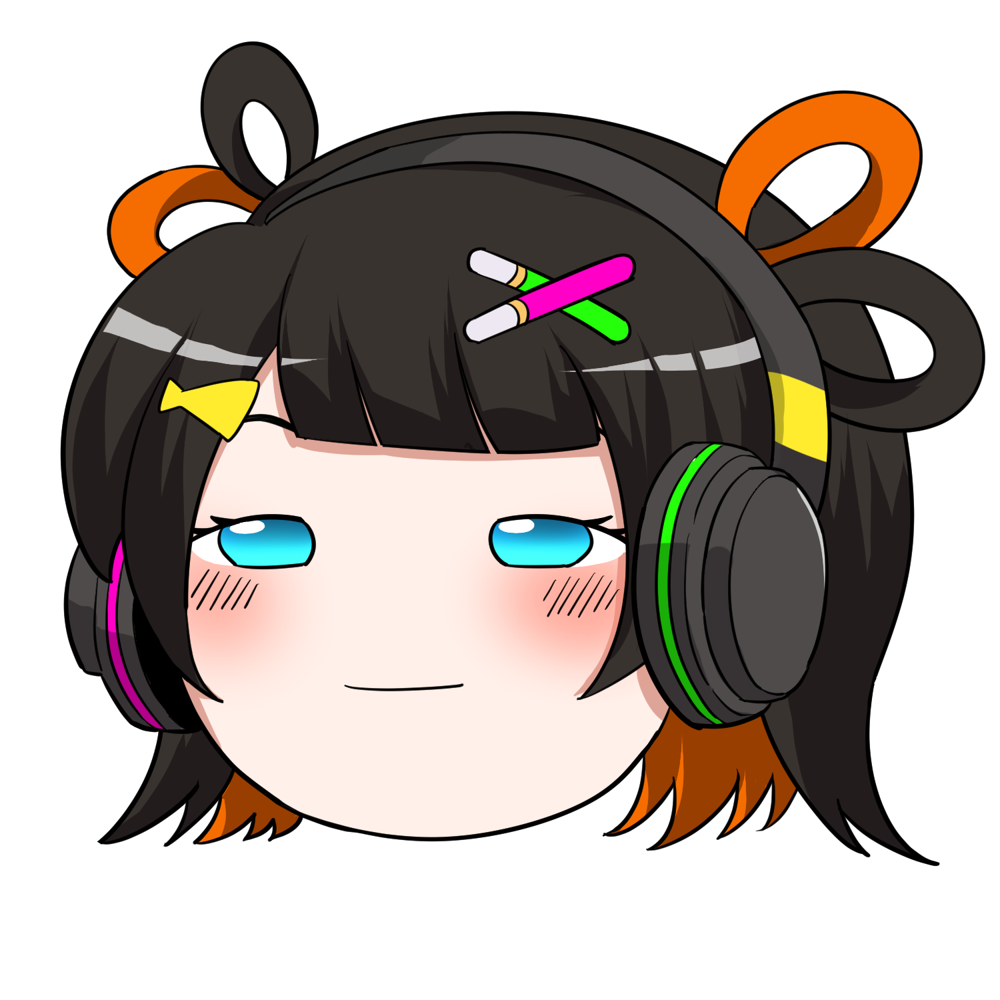
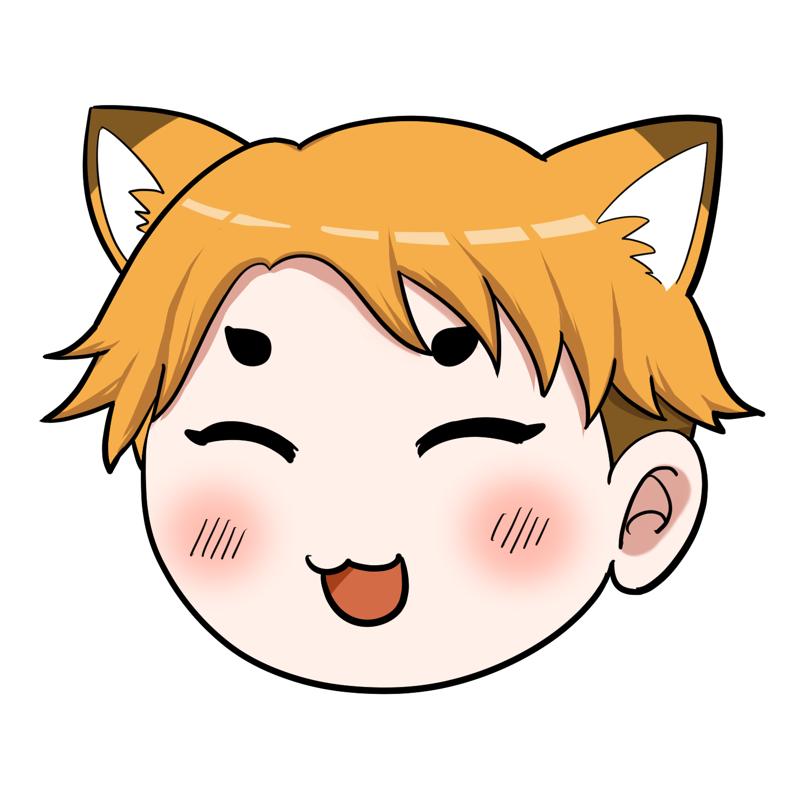
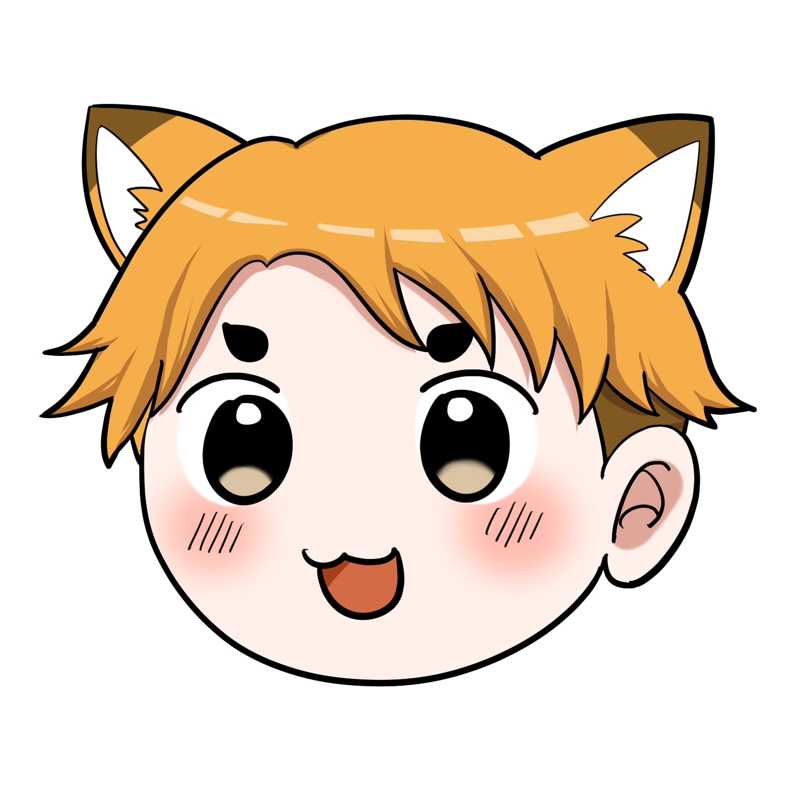

エクソソームって何？
ゆっくり3人組がやさしく解説
いま研究が進んでいるのが、「エクソソーム」という細胞間の情報の運び手。ヒトでの医療応用は研究が進められている段階です。3人組が、その話題をゆっくりやさしく解きほぐします。
💥 まずは衝撃の事実から
ねえ二人とも。今から30年以上前、ある日本の研究者が、世界中の医学者が見逃していた事実に気づいたの。
「幹細胞そのものじゃなくて、幹細胞が出している"何か"が、再生の主役だった」って。
えっ！？じゃあそれまでみんな、何を見てたのだ…？

iPS細胞とか、聞いたことあるけど…そっちじゃないの？
そう、iPS細胞がよく知られているわね。いっぽうで、別のところも研究されているの。それが今日のテーマ 「エクソソーム」 なのよ。
🧬 結論：エクソソームの正体
エクソソームとは、細胞から分泌される、直径50〜150ナノメートル（10億分の1メートル）の超小型カプセルです。中にメッセンジャーRNA（mRNA）・マイクロRNA（miRNA）・タンパク質を抱え込み、ほかの細胞へ情報を届けます。
イメージするなら、お手紙です。
細胞同士が「お手紙」を交わしていて、中に書かれた情報（mRNAやタンパク質）が便せん、それを包んで届ける封筒がエクソソーム、という関係です。

むずかしいのだ…！ナノメートルって何なのだ？
大丈夫よ、もっと身近なものに例えて説明するわね。
🍱 エクソソームは「お弁当箱」
たぬ姉が用意した例え話で、エクソソームをイメージしてみましょう。
エクソソームを、小さな「お弁当箱」だと思ってみて。
細胞というお母さんが、お弁当箱（エクソソーム）の中に、お手紙やおかず（遺伝情報やタンパク質）を詰めて、他の細胞に届けるの。

へえ！じゃあ受け取った細胞は、お弁当箱の中身を見て「あ、お母さんからこんなメッセージが来てる！」って分かるってこと？
そういうこと。だからエクソソームは「細胞間の通信手段」とも呼ばれているのよ。

お弁当の配達なのだ！分かりやすいのだ！
🔬 もう少し詳しく
どんな細胞から出てくる？
エクソソームは、ほぼすべての細胞から放出されていることが知られています。免疫細胞、神経細胞、上皮細胞、そして血液中など、私たちの体のあちこちで作られて、あちこちで受け取られています。
中身には何が入っている？
- mRNA（メッセンジャーRNA）：タンパク質の設計図
- miRNA（マイクロRNA）：遺伝子の働きを調整する小さなRNA
- タンパク質：細胞活動に必要な分子
- 脂質：エクソソームの外側の膜を作る
どう作られる？
細胞の中で、内側に小さな袋（小胞）がたくさん入った大きな袋（多胞体）ができ、それが細胞膜と融合することで、中の小袋が外に放出されます。この放出された小袋がエクソソームです。
💡 なぜ今、エクソソームが注目されているの？

姉ちゃん、なんで最近こんなに「エクソソーム」って聞くの？
背景には、研究の世界での発想の転換があるのよ。
「幹細胞が分泌するサイトカインやエクソソームが、組織の再生に関わっているのではないか」という考え方が、研究者のあいだで報告されてきたの。まだ研究段階の話よ。
えっ、それまでみんな何だと思ってたのだ？
それまでは「幹細胞そのものが主役」だと考えられていたのね。だから培養上清液（幹細胞を育てた液から細胞を抜いた上澄み）は、長らく「廃棄物」として扱われていたのよ。
その上澄みのほうに、再生に関わる成分が含まれているのではないか。そういう研究が報告されるようになったの。効果を保証するものではないわ。
① 再生医療での活用が研究されている
幹細胞そのものを使うのではなく、幹細胞が放出するエクソソームや培養上清液を利用する「セルフリー再生医療（Stem-Cell-Free Therapy）」が、世界的に注目されています。生きた細胞を移植しないので、腫瘍化のリスクや感染性、アレルギー反応などを避けやすいと考えられています。
② 美容分野での応用
肌の細胞同士のコミュニケーションを助けるとして、エクソソーム配合の化粧品やクリニックの施術が登場しています。培養上清液に含まれる多種類のサイトカイン（細胞間の伝達物質）・成長因子が、肌のターンオーバーや弾力に関わる細胞へ働きかけることが期待されています。
③ 病気の診断マーカーとしての期待
がんなどの病気では、特定のエクソソームが血液中に増えることが報告されており、早期診断への応用が研究されています。
エクソソームに関する研究は急速に進展していますが、医療応用や美容効果については、各国の規制状況や臨床的なエビデンスの蓄積状況が異なります。施術や商品を検討する際は、信頼できる医療機関や情報源で最新の情報を確認してください。
📚 培養上清の研究を、もう少し
培養上清に注目が集まったきっかけのひとつは、「移植する幹細胞の量を変えても、再生の度合いがあまり変わらない」といった観察だといわれます。そこから「幹細胞そのものではなく、幹細胞が出している『何か』が働いているのではないか」という仮説が考えられるようになりました。
その後の研究で、培養上清液にはたくさんの種類の生理活性物質が含まれていることが報告され、幹細胞が出す多様な分泌物（セクレトーム）が組み合わさって働くのではないか、と考えられるようになっています。タンパク質の一種であるサイトカイン（分子量が大きいもの）から、エクソソーム（遺伝子の切れ端が詰まったカプセルのような分子量が小さなもの）まで、培養上清には多種多様な物質が含まれています。
単一の成分ではなく、「多種多様な物質が一緒になったときに働きが現れるのではないか」という考え方です。これは、たくさんのおかずが組み合わさってこそ栄養バランスがとれるお弁当に似た例えです。研究段階の報告であり、治療効果を保証するものではありません。
そんなにたくさん！？お弁当の中身、おかずが多すぎて選べないのだ！
そう、だから「1個だけ取り出して薬にする」ではなくて、「培養上清をそのまま使う」のがポイントなのよ。
💭 では、なぜまだ広まらないのか？
そんなにすごいなら、なんでみんな知らないの？病院に普通に置いてないし…
よく言われる理由のひとつはね…
「製薬企業にとって儲かりにくい」からなのよ。
えっ、研究の話があるのに、なかなか広がらないって、どういうことなのだ…？
従来の薬は「1つの有効成分」を特許で守ることが多いの。培養上清にはたくさんの種類のサイトカインなどが含まれていて、それらが一緒に働いているのではないか、と考えられているの。効果を保証する話ではないわ。成分が多いと特許にしにくく、大きな企業が動きにくい、という見方もあるのよ。
だから研究や、自由診療として扱うクリニックで、いま検討が続いている、という整理なの。
つまりボクたちは、ニュースじゃなく「実物」で知る側に回るってことか…
エクソソームは「もう答えが出て、誰にでも効く」という話ではありません。研究は進んでいる一方で、ヒトでの確かめや制度の整備はまだ追いついていない、と考えられています。
📝 3行まとめ
- エクソソームは、細胞が交わす「お手紙の封筒」（直径約100nm）
- 幹細胞そのものだけでなく、この封筒（と中身）が再生に関わっている、と考えられている
- 培養上清にはたくさんの種類の成分が含まれると報告されていて、応用は研究が進められている段階
「細胞のお弁当便」って覚えればいいのだ！
その理解で十分よ。次の記事では「幹細胞との違い」を見ていきましょう。
- Kalluri R, LeBleu VS. The biology, function, and biomedical applications of exosomes. Science. 2020. PubMed PMID: 32029601
- MISEV2023: An updated guide to EV research and applications. J Extracell Vesicles. 2024.（国際細胞外小胞学会 ISEV のガイドライン） PubMed PMID: 38400602
- Gnecchi M, et al. Paracrine action accounts for marked protection of ischemic heart by Akt-modified mesenchymal stem cells. Nat Med. 2005. PubMed PMID: 15812508
- Vizoso FJ, et al. Mesenchymal Stem Cell Secretome: Toward Cell-Free Therapeutic Strategies in Regenerative Medicine. Int J Mol Sci. 2017. PubMed PMID: 28841158